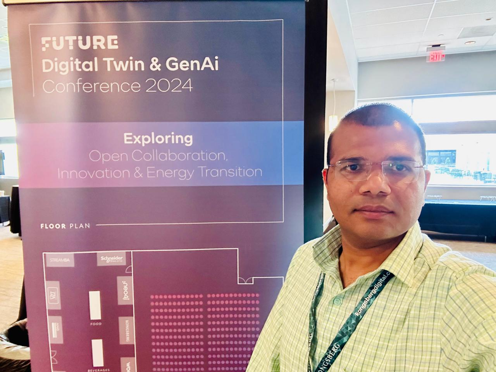

Digital Twin Strategy & Delivery
From business case and roadmap to a working enterprise Digital Twin.
- Roadmaps that scale past the pilot
- Platform selection and architecture
- Rollout across business units
I help oil & gas and industrial companies turn scattered engineering data into one governed, trusted Digital Twin — from strategy and architecture to delivery.

Years in oil & gas
digital transformation
Business units
transformed
Users supported
worldwide
Engineering documents
governed
Most Digital Twin projects fail on information, not software. I fix the foundation, then build on it.
From business case and roadmap to a working enterprise Digital Twin.
TOGAF®-aligned architecture and leadership across engineering, operations and IT.
Trusted engineering information, connected to live operations.
Standards first, software second.
Understand the asset, the business and the information as it really is.
Measure digital maturity and asset readiness before proposing anything.
Define the target architecture and the information model.
Connect engineering, operational and enterprise systems into one platform.
Prioritise use cases by ROI and feasibility, not by novelty.
Delivered for Chevron, ADNOC and other oil & gas majors.
Fragmented asset information became one governed environment on AVEVA AIM / NET, adopted enterprise-wide.
Legacy information cleaned, migrated and structured into a single trusted source for 12 Chevron business units.
ETL pipelines that validate, transform and load engineering data at a volume manual checking could not match.
A Neo4j graph linking drawings, equipment and tags, so asset questions are answered by query instead of manual reconstruction.
SCADA, DCS, PLC and historians connected to CMMS, APM and the Digital Twin, bringing real-time data into enterprise decisions.

I started as a mechanical engineer in a refinery and grew into the person who owns the single source of truth for whole organisations. That path is why my Digital Twins work on the plant floor and in the boardroom.
Certified 2024. The architecture discipline behind every program I lead.
Plain-language guides from 18+ years of delivery.
Why Digital Twin programs succeed or fail on information, not software: single source of truth, ISO 15926, CFIHOS, DEXPI and knowledge graphs.
Read the whitepaperBased in India, with active engagements across the UAE and USA. Happy to connect remotely or on-site.